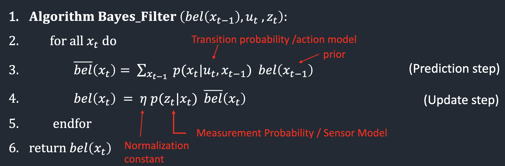

Test New Localization Simulation
In Lab 10, we wrote the localization code by ourself to learn the processes, filters, and models used
to localize a mobile robot. In the current lab, we are provided with an optimized implementation which we will modify
to drive our physical robot. The optimized code utilizes precaching, vector processing, and other programming practices
which significantly speed up the calculation time. To test this code out, I ran the simulation once again and made sure
it yielded the expected results. Below is the output of the simulation, where The green line shows the robot's actual ground
truth position, the red line is
estimation based on odometry/sensor values, and the blue line is the Bayes filter estimation of the position.
